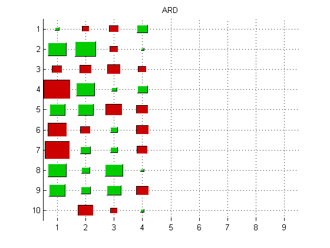
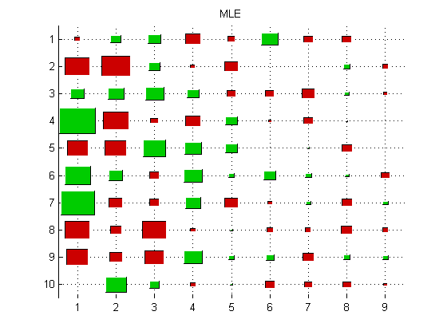

Bayesian Probabilistic PCA Imputation Demo
Reproduce Bishop fig 12.14 Needs BPCAfill package from http://hawaii.sys.i.kyoto-u.ac.jp/~oba/tools/
setSeed(0); %n = 100; n = 300; d = 10; %sigma = [5,4,3,2,1*ones(1,6)]; % ICANN'99 sigma = [1,1,1,0.5*ones(1,7)]; % book p584 Sigma = diag(sigma); mu = zeros(1,d); k = 4; W = zeros(d,d); for i=1:k modeli = struct('mu', mu, 'Sigma', sigma(i)*eye(d)); W(:,i) = gaussSample(modeli); end Z = randn(d,n); X = W*Z + randn(d,n); X = X'; %figure; hintonDiagram(W); title('truth');
kmax = d-1; [Xfilled,M] = BPCAfill(X, kmax); figure; hintonDiagram(M.W); title('ARD'); printPmtkFigure('ppcaVBhintonArd') [Wppca, mu, sigma2, evals, evecs, Xproj, Xrecon] = ppcaFit(X, kmax); figure; hintonDiagram(Wppca); title('MLE'); printPmtkFigure('ppcaVBhintonMle')
epoch=10, dtau=2.89485 epoch=20, dtau=0.0752041 epoch=30, dtau=0.0255487 epoch=40, dtau=0.0171121 epoch=50, dtau=0.00366972 epoch=60, dtau=2.97333e-005 